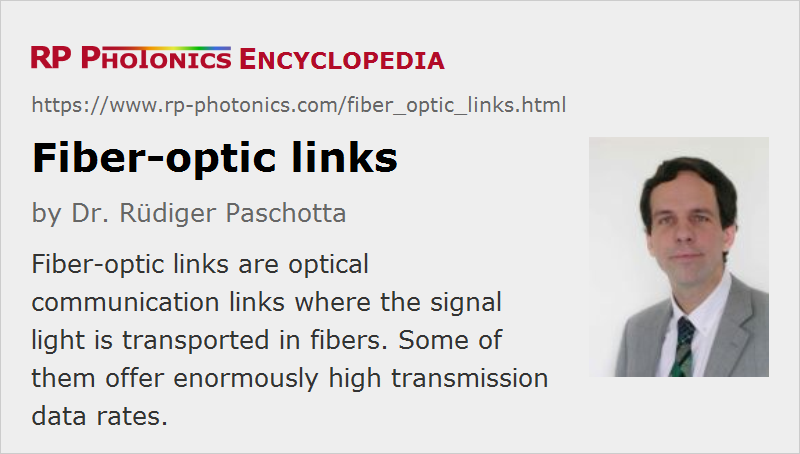

Fiber-optic Links
Definition: optical communication links where the signal light is transported in fibers
Alternative term: fiber channels
German: faseroptische Verbindungen
Categories: fiber optics and waveguides, lightwave communications
How to cite the article; suggest additional literature
Author: Dr. Rüdiger Paschotta
A fiber-optic link (or fiber channel) is a part of an optical fiber communications system which provides a data connection between two points (point-to-point connection). It essentially consists of a data transmitter, a transmission fiber (in some cases with built-in fiber amplifiers), and a receiver. Even for very long transmission distances, extremely high data rates of many Gbit/s or even several Tbit/s can be achieved.
The used components, which are mostly based on fiber optics, are explained in the following, beginning with a simple single-channel system. More sophisticated approaches are discussed thereafter.

Transmission Formats
In most cases, the data transmission is digital, making the system very versatile and relatively insensitive, e.g. to nonlinear distortions. There are various different modulation formats, i.e., different methods for encoding the information. For example, a simple non-return-to-zero (NRZ) format transmits subsequent bits by sending a high or low optical power value, with no gaps between the bits, and extra means for synchronization. In contrast, a return-to-zero (RZ) format is easily self-synchronizing by returning to a rest state after each bit, but it requires a higher optical transmission bandwidth for the same data rate. Apart from details of the equipment and the optical bandwidth required (related to the modulation efficiency), different transmission formats also differ in terms of their sensitivity e.g. to noise influences and cross-talk.
Transmitter
The transmitter converts the electronic input signal into a modulated light beam. The information may be encoded e.g. via the optical power (intensity), optical phase or polarization; intensity modulation is most common. The optical wavelength is typically in one of the so-called telecom windows (see the article on optical fiber communications).
A typical transmitter is based on a single-mode laser diode (normally a VCSEL or a DFB laser), which may either be directly modulated via its drive current (DML = directly modulated laser), or with an external optical modulator (e.g. an electroabsorption or Mach–Zehnder modulator). Direct modulation is the simpler option, and can work at data rates of 10 Gbit/s or even higher. However, the varying carrier density in the laser diode then leads to a varying instantaneous frequency and thus to signal distortions in the form of a chirp. Particularly for long transmission distances, this makes the signal more sensitive to the influence of chromatic dispersion. Therefore, external modulation is usually preferred for the combination of high data rates (e.g. 10 or 40 Gbit/s) with long transmission distances (many kilometers). The laser can then operate in continuous-wave mode, and signal distortions are minimized.
For even higher single-channel data rates, time division multiplexing may be employed, where e.g. four channels with 40 Gbit/s are temporally interleaved to obtain a total rate of 160 Gbit/s. For high data rates with return-to-zero formats, it can be advantageous to use a pulsed source (e.g. a mode-locked laser emitting soliton pulses) combined with an intensity modulator. This reduces the bandwidth demands on the modulator, as it does not matter how the modulator's transmittance evolves between the pulses.
For high data rates, the transmitter needs to meet a number of requirements. In particular, it is important to achieve a high extinction ratio (low pedestal pulses), a low timing jitter, low intensity noise, and a precisely controlled clock rate. Of course, a data transmitter should operate stably and reliably with minimum operator intervention.
In simple cases, a light-emitting diode (LED) is used in the transmitter, but due to the poor spatial coherence this requires the use of multimode fibers. The transmission rate or distance is then restricted due to intermodal dispersion; for a longer bandwidth–distance product, single-mode fibers are required. For short distances, several hundred Mbit/s are possible.
Transmission Fiber
The transmission fiber is usually a single-mode fiber in the case of medium or long-distance transmission, but can also be a multimode fiber for short distances. In the latter case, intermodal dispersion can limit the transmission distance or bit rate.
Long-range broadband fiber channels can contain fiber amplifiers at certain points (lumped amplifiers) to prevent the power level from dropping to too low a level. Alternatively, it is possible to use a distributed amplifier, realized with the transmission fiber itself, by injecting an additional powerful pump beam (typically from the receiver end) which generates Raman gain. In addition, means for dispersion compensation (counteracting the effects of chromatic dispersion of the fiber) and for signal regeneration may be employed. The latter means that not only the power level but also the signal quality (e.g. pulse width and timing) is restored. This can be achieved either with purely optical signal processing, or by detecting the signal electronically, applying some optical signal processing, and resending the signal.
Receiver
The receiver contains some type of fast photodetector, normally a photodiode, and suitable high-speed electronics for amplifying the weak signal (e.g. with a transimpedance amplifier) and extracting the digital (or sometimes analog) data. For high data rates, circuitry for electronic dispersion compensation may be included.
Avalanche photodiodes can be used for particularly high sensitivity. The sensitivity of the receiver is limited by noise, normally of electronic origin. Note, however, that the optical signal itself is accompanied by optical noise, such as amplifier noise. Such optical noise introduces limitations which can not be removed with any receiver design. Noise effects are discussed below in more detail.
Bidirectional Transmission
So-called full duplex links provide a data connection in both directions. These may simply be based on separate optical fibers, or work with a single fiber. The latter can be realized e.g. by using fiber-optic beam splitters at each end to connect a transmitter and a receiver. However, the need for bidirectional operation introduces various trade-offs, which in some cases (e.g. for very high data rates) make a system with two separate fibers preferable.
Multiplexing
A typical single-channel system for long-haul transmission has a transmission capacity of e.g. 2.5 or 10 Gbit/s; higher data rates of 40 Gbit/s or even 160 Gbit/s may be used in the future. For higher data rates, several data channels can be multiplexed (combined), transmitted through the fiber, and separated again for detection.
The most common technique is wavelength division multiplexing (WDM). Here, different center wavelengths are assigned to different data channels. It is possible to combine even hundreds of channels in that way (DWDM = dense WDM), but coarse WDM with a moderate number of channels is often preferred in order to keep the system simpler. The main challenges are to suppress channel cross-talk via nonlinearities, to balance the channel powers (e.g. with gain-flattened fiber amplifiers), and to simplify the systems.
Another approach is time division multiplexing, where several input channels are combined by nesting in the time domain, and solitons are often used to ensure that the sent ultrashort pulses stay cleanly separated even at small pulse-to-pulse spacings.
For short distances, for example for connections within data centers, it can be simpler to use ribbon fiber cables with multiple fibers and corresponding numbers of transmitters and receivers. However, a disadvantage of that approach is that the cables become bulkier.
Active Optical Cables
For short transmission distances, so-called active optical cables (AOC) can be used, where a transmitter and a receiver (together with corresponding electronics) are rigidly attached to the ends of an optical fiber cable. Common electrical interfaces such as USB or HDMI ports are available, so that the use of such an active optical cable is essentially the same as that of an electrical cable, while offering advantages like reduced diameter and weight and also a larger possible transmission distance.
Fiber to the Home
It is possible to use optical links even to supply data over the “last mile” to single homes and offices. This technology is called fiber to the home (FTTH). In many cases, however, the last mile is still bridged with copper cables, and fiber-optic transmission occurs only up to some small stations close to the users.
Limitations via Noise and Cross-talk
Ultimately, the data transmission capacity of any system is limited by noise. In amplified optical systems, quantum noise e.g. in the form of spontaneous emission in fiber amplifiers (→ amplifier noise) is not avoidable. It can impact the system performance in different forms, such as timing jitter (→ Gordon–Haus jitter, particularly in soliton systems) or intensity noise affecting the photodetection.
Apart from noise, certain systematic signal distortions can also limit the transmission distance or bit error rate. In particular, chromatic dispersion and nonlinearities of the transmission fiber can cause severe signal distortions. As an example, Figure 2 shows a so-called eye diagram. Here, the “eye” is wide open, so that the signal could still be well detected. For twice the fiber length (not shown here), this would be different.
Note that the transmitter also has an important impact on signal detection issues. For example, a simple directly modulated transmitter may produce some unwanted frequency chirp, which increases the effect of chromatic dispersion in the transmission fiber and thus makes it more difficult to receive a clean signal after some propagation distance.
A related and even more sophisticated topic is cross-talk between the different channels e.g. of a WDM system. In systems with constant channel spacing, the channels can also influence each other in the form that one channel is amplified at the expense of the power in another channel (→ four-wave mixing). The impact of such effects can depend strongly on the system architecture, including the transmitter type, modulation format, fiber parameters, detection techniques, etc. The modeling of these effects and the subsequent optimization of communication systems are complex tasks.
Noise and related influences always cause some bit error rate, i.e., some portion of the transmitted bits will not be correctly detected. Provided that the bit error rate is at a sufficiently low level, occasional bit errors can be detected with certain techniques and corrected (e.g. by resending of defective data packets). For increasing transmission distances and/or data rates, the bit error rate finally sets some limits. In that context, the bandwidth–distance product is often used in a comparison of different fiber-optic links.
Suppliers
The RP Photonics Buyer's Guide contains 12 suppliers for fiber-optic links. Among them:
Questions and Comments from Users
Here you can submit questions and comments. As far as they get accepted by the author, they will appear above this paragraph together with the author’s answer. The author will decide on acceptance based on certain criteria. Essentially, the issue must be of sufficiently broad interest.
Please do not enter personal data here; we would otherwise delete it soon. (See also our privacy declaration.) If you wish to receive personal feedback or consultancy from the author, please contact him e.g. via e-mail.
By submitting the information, you give your consent to the potential publication of your inputs on our website according to our rules. (If you later retract your consent, we will delete those inputs.) As your inputs are first reviewed by the author, they may be published with some delay.
Bibliography
| [1] | R. Paschotta, case study on signal distortion in a fiber-optic link |
See also: optical fiber communications, optical data transmission, fiber-optic networks, fiber optics, bit error rate, bandwidth–distance product, fiber to the home, fiber amplifiers, distributed amplifiers
and other articles in the categories fiber optics and waveguides, lightwave communications
|  |
If you like this page, please share the link with your friends and colleagues, e.g. via social media:
These sharing buttons are implemented in a privacy-friendly way!